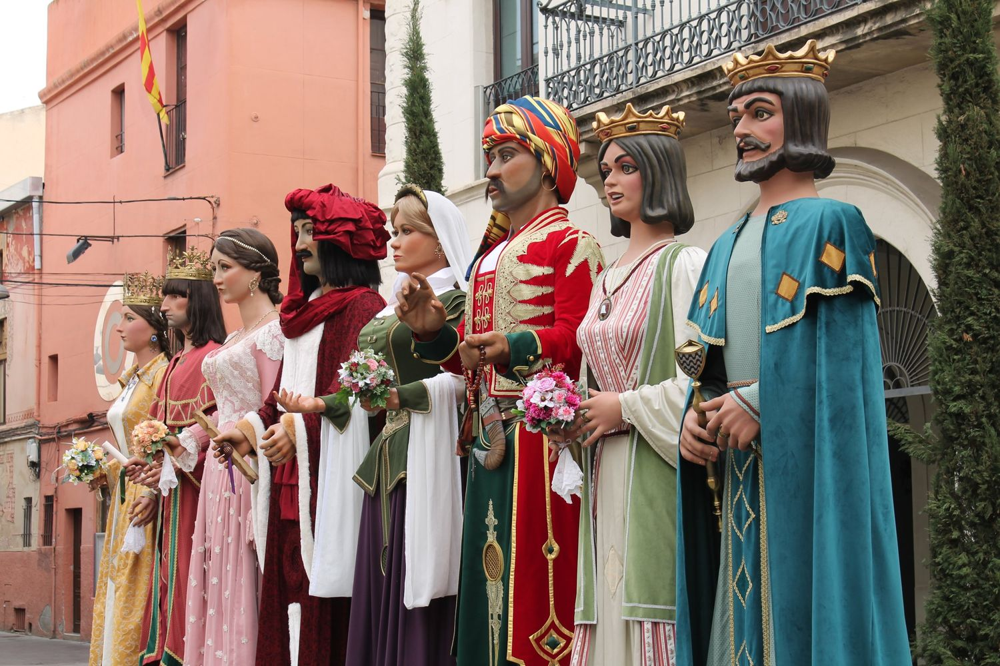
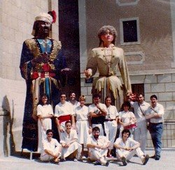
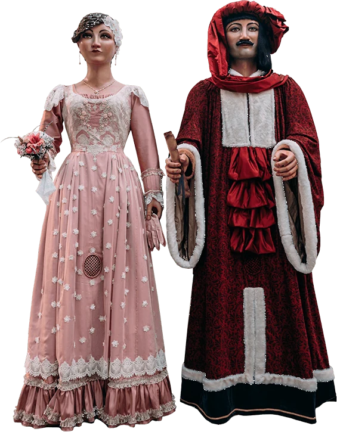
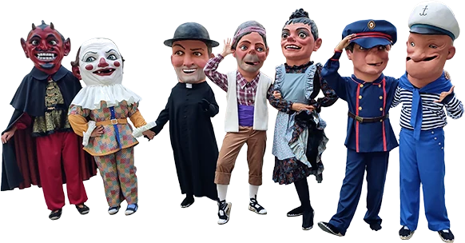
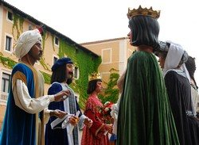

Des del 1986 ballant els gegants, els capgrossos i l'Àliga de la ciutat
Som la colla que cuida i fa ballar les figures festives de Badalona. Surten a les Festes de Maig, a la Festa Major d'agost i a moltes celebracions més.
Una colla que va néixer d'un ensurt
Abans del 15 d’agost de 1986 no existia cap grup de gent estable que fes ballar i cuidés els gegants de la ciutat. Va ser aquell dia quan, per primera vegada, dalt les escales de l’Església de Santa Maria, en Ripal i na Brunel·la del Mar foren ballats per una colla de joves provinents de l’Esbart Sant Jordi.

Les figures de la ciutat

Els gegants
Quatre parelles grans i els petits: Anastasi i Maria, Jeroni i Badamar, Ferrer i Elionor, Ripal i Brunel·la.
Entra →
L'Àliga
Una àliga coronada que ha tornat a volar per Badalona des de 1998.
Entra →
Els capgrossos
Tres comparses amb més d'un segle d'història a la ciutat.
Entra →
Balls i música
Cada parella té el seu ball, la majoria són havaneres.
Entra →Properes dates
Les sortides fixes de l'any, des de la Nit de Sant Anastasi fins a la Diada.
Vols fer-te membre de l'entitat?
Per fer-te membre de la Colla de Geganters de Badalona tan sols has de posar-te en contacte amb el nostre cap de colla i venir als assajos i sortides que fem al llarg de l’any. Si vols ser geganter/a, graller/a o caixer/a només cal tenir ganes i empenta!
Vine a un assaig
Ens trobaràs a la Masia de Can Canyadó, a la plaça de Pompeu Fabra. Escriu-nos per saber els dies d'assaig.
Com contactar